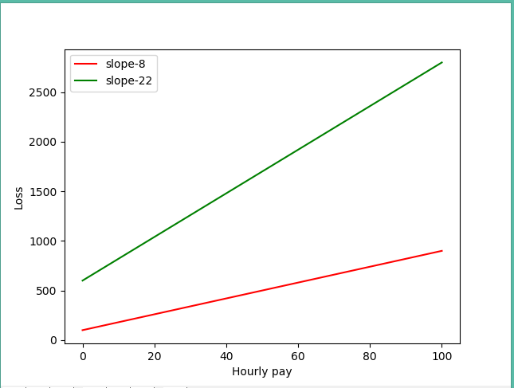

这是一篇有泪水的文章，本该昨天写完的，结果晚上断网，炸了；
早上重新写了一遍，正巧当时在安装软件，安装完成后有个重启电脑的选项，然后手贱又点了一下；
本来现在我应该坐在办公室敲着键盘，结果现在换了地方，在家里敲键盘，原因很简单，请了病假；
上周一偶感风寒，想着身体应该能扛过去，就没在意，相信很多在外漂泊的工作者都有这种想法；
在公司一直吹着空调，而且还调动一部分身体机能维持大脑发动，病菌自然而然的就趁虚而入了，当时我在考虑一个问题：工作重要还是身体重要？
我选择了工作，下班结束后去打点滴，打了两天，白天继续上班；
然而我高看了自己的身体素质，说实话，自从毕了业，好久没有锻炼身体了，自己身体怎么样没点数吗；
最后越拖越严重，不得不请了两天假，还去了趟医院，得不偿失啊；
我用亲身经历得出了，到底是工作重要还是身体重要？身体，身体，身体，当然是身体重要 : 身体，身体，身体，当然还是身体重要；
在外漂泊不敢生病，尤其是一个人的时候，事实证明，生一次病比上几天班亏很多，数据也证明，有病得尽早治：
我们假设你的时薪为x，一天就算工作8小时，你的总损失为y
情况1：及时治疗=>
y=8x+100 //普通感冒预计100以内解决
情况2：我的情况
y=2*3x+300+2*8x+300 //下班后花3小时去打点滴，2天；请假两天，又去看病

import matplotlib.pyplot as plt
import numpy as np
plt.figure(1)
x=[]
y=[]
m=[]
n=[]
b=np.linspace(0,100)
for i in b:
m.append(i)
n.append(22*i+600)
a=np.linspace(0,100)
for i in a:
x.append(i)
y.append(8*i+100)
plt.plot(x,y,'r',label='slope-8')
plt.plot(m,n,'g',label='slope-22')
plt.xlabel('Hourly pay')
plt.ylabel('Loss')
plt.legend()
plt.show()
光从斜率我们就可以看出两者所需付出的代价间的差距，尤其是损失还与时薪成正比；
其实还是自己太着急了，独立是个美好的名词，但却并不好承受，因为很多事情你都需要自己来扛，若可以，谁愿意，都是为了生活，愿每个人都学会珍惜自己，致每一位独立者；